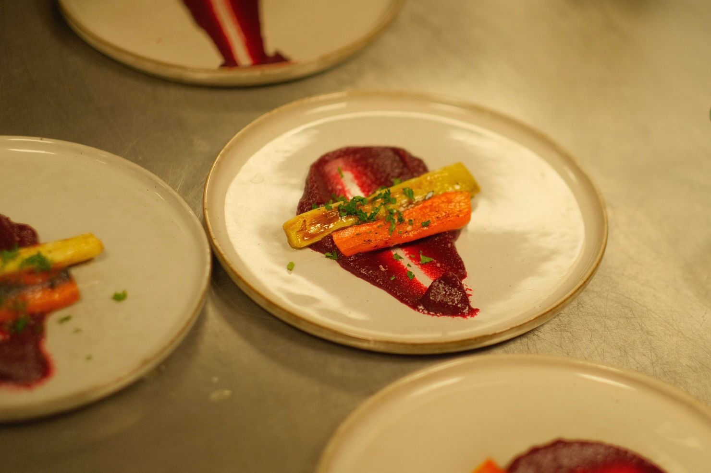
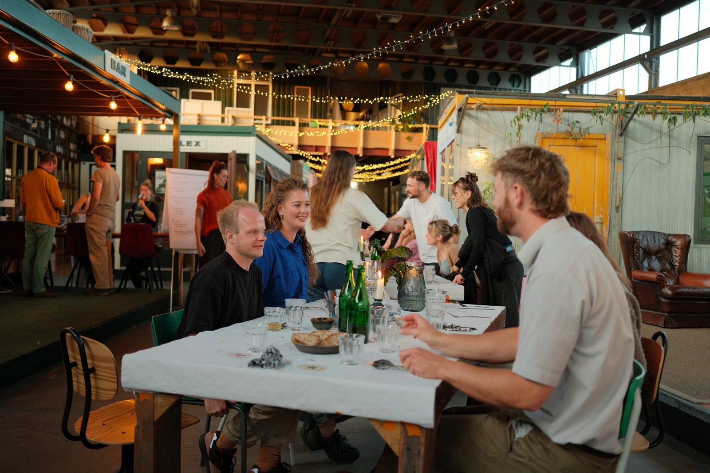
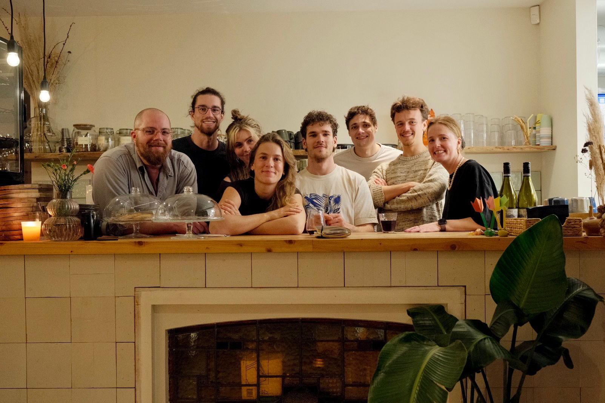
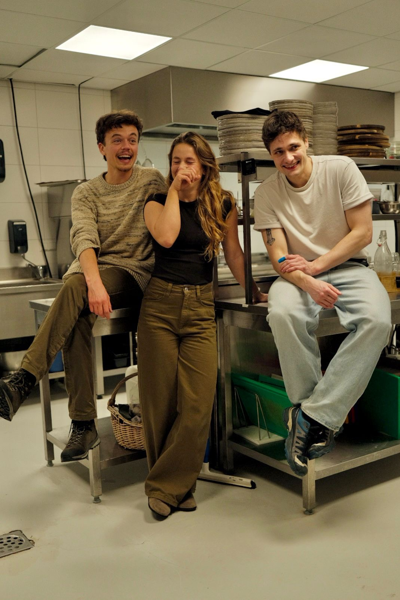
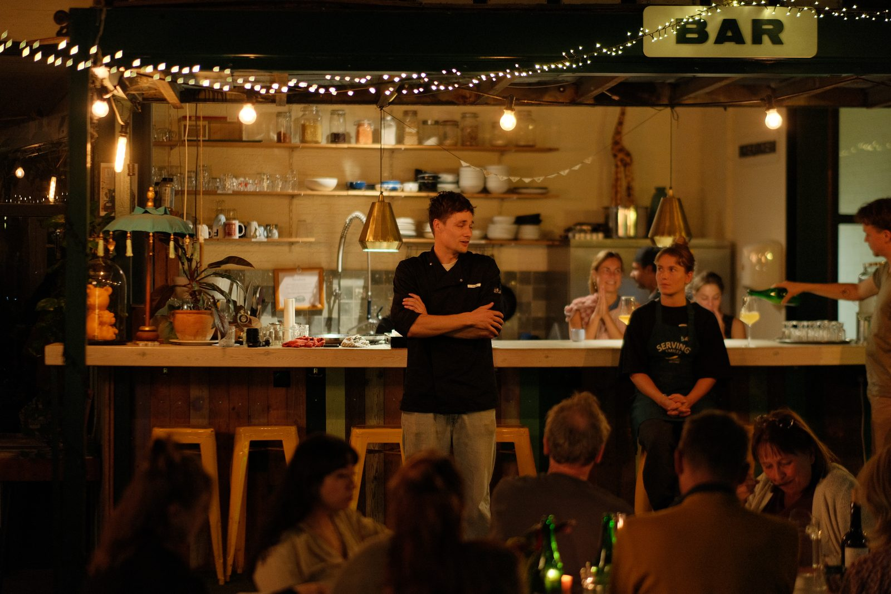
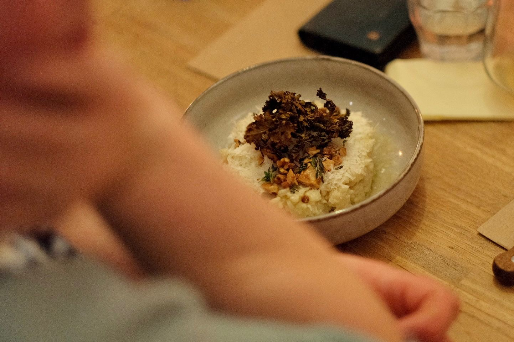
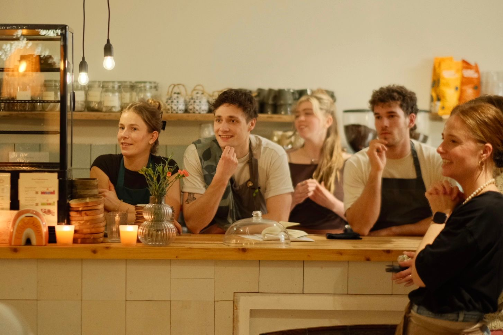
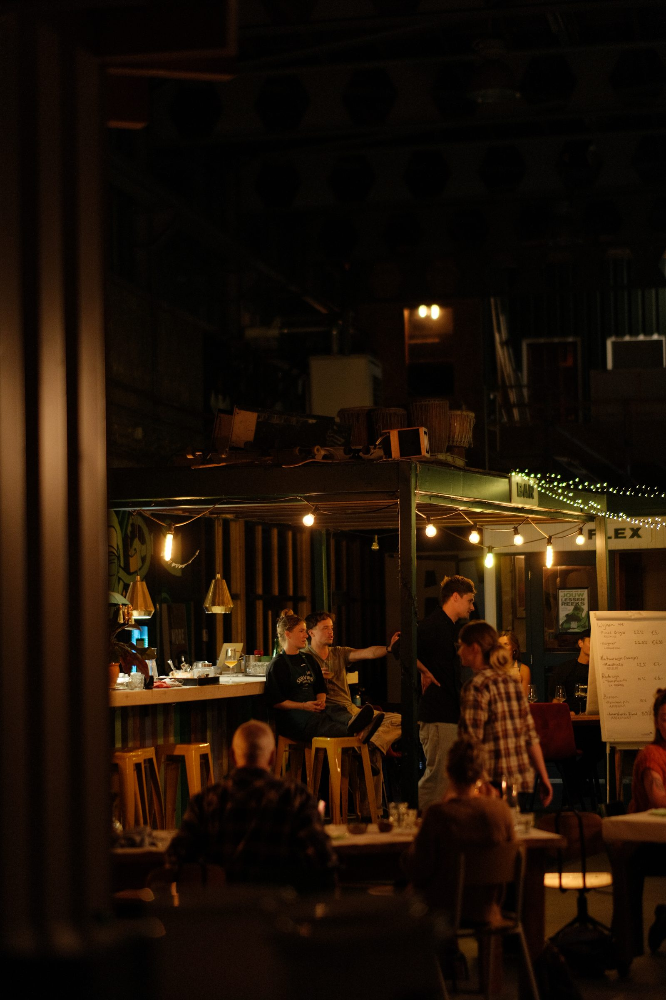

Community Kitchen Amersfoort is made up of volunteers, local makers, neighbours, fellow city residents, entrepreneurs, bakers, beekeepers, regional farmers, cooks, neighbourhood associations, elderly people, newcomers and everyone who loves eating and cooking together.
We work together with local makers, growers, entrepreneurs and sponsors to make every edition possible. Want to contribute too?








Alard and Tom brew Amersfoort kombucha from leftover fruit from De Elzenkamp.
Visit website ↗Else and Arjen donate leftover vegetables, fruit and herbs for our menus.
Visit website ↗A creative venue that has hosted an edition.
Visit website ↗A special spot where we cooked an edition.
Visit website ↗